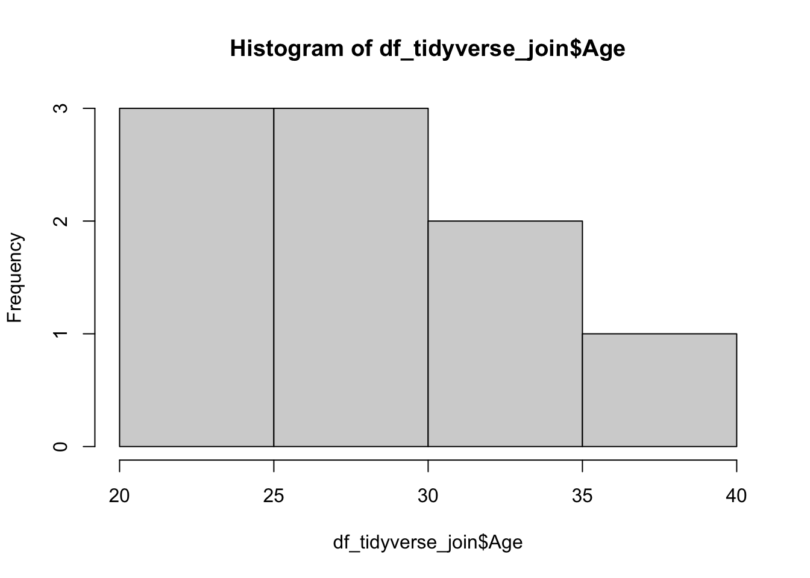
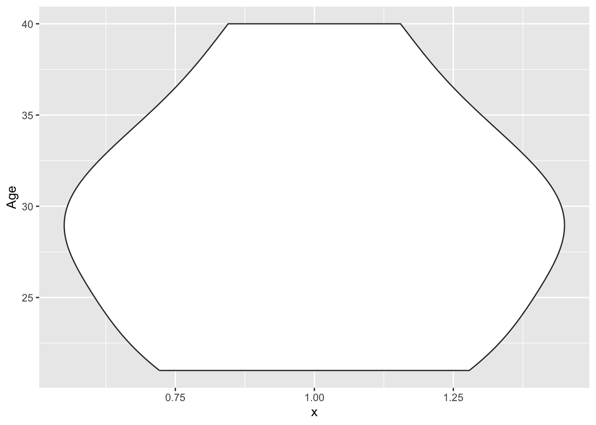
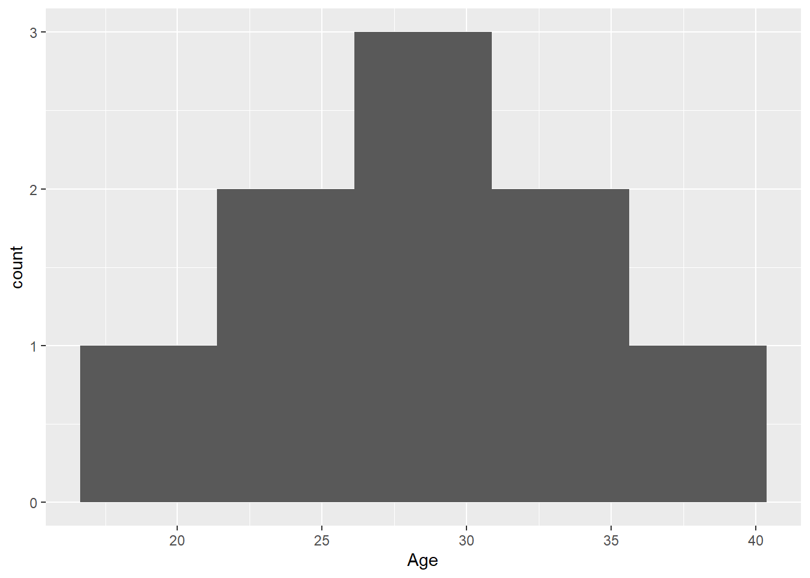

library(tidyverse)
library(ggforce)Presentation 1: Data Cleanup (Base R and Tidyverse)
In this section we will look at some differences between base R and tidyverse and also learn how to prepare a clean dataset.
Load Packages
Load Dataset
Here we load a dataframe that contains sales data for employees (in thousands DKK) from 2020 to 2023. We load the data as df_baseR which we will use to demonstrate base R commands. A copy of the same dataframe, df_tidyverse, is used to demonstrate tidyverse commands.
df_baseR <- readxl::read_excel('../data/df_sales_1.xlsx') %>% as.data.frame()
df_tidyverse <- readxl::read_excel('../data/df_sales_1.xlsx') %>% as_tibble()Table format in baseR is called data.frame. Have a look at the object in the terminal. It is very simple.
class(df_baseR)[1] "data.frame"Table format in tidyverse is called tibble. Have a look at the object in the terminal. The dimensions of the tibble is provided together with the classes of each column.
class(df_tidyverse)[1] "tbl_df" "tbl" "data.frame"Accessing and manipulating Data with Base R and Tidyverse
Many operations in R can be done in several ways. We illustrate here the base R and tidyverse ways to achieve common operations.
Accessing Data
Access the Age column:
# Base R
df_baseR['Age']
# Tidyverse
df_tidyverse %>% select(Age)Access the Age column as a vector:
# Base R
df_baseR[['Age']]
df_tidyverse$Age
# Tidyverse
df_tidyverse %>% pull(Age)Manipulating Data
Add a column.
# Base R
df_baseR$mood <- "happy"
# Tidyverse
df_tidyverse <- df_tidyverse %>%
mutate(mood = "happy")Add a column containing the difference in sales in 2022 and 2022.
# Base R
df_baseR$sales_diff <- df_baseR$sales_2022 - df_baseR$sales_2020
# Tidyverse
df_tidyverse <- df_tidyverse %>%
mutate(sales_diff = sales_2022 - sales_2020)Remove the sales_diff column.
# Base R
df_baseR$sales_diff <- NULL
# Tidyverse
df_tidyverse <- df_tidyverse %>%
select(-sales_diff)Adding a column with content based on a condition with ifelse.
# Base R
df_baseR$raise <- ifelse(df_baseR$sales_2023 > df_baseR$sales_2022, "yes", "no")
# Tidyverse
df_tidyverse <- df_tidyverse %>%
mutate(raise = ifelse(sales_2023 > sales_2022, "yes", "no"))Extension of ifelse: case_when
# Base R
df_baseR$group <- ifelse(df_baseR$Age < 30 & df_baseR$Sex == "Female", "young_female",
ifelse(df_baseR$Age < 30 & df_baseR$Sex == "Male", "young_male",
ifelse(df_baseR$Age >= 30 & df_baseR$Sex == "Female", "mature_female",
ifelse(df_baseR$Age >= 30 & df_baseR$Sex == "Male", "mature_male", NA))))
# Tidyverse
df_tidyverse <- df_tidyverse %>%
mutate(group = case_when(Age < 30 & Sex == "Female" ~ "young_female",
Age < 30 & Sex == "Male" ~ "young_male",
Age >= 30 & Sex == "Female" ~ "mature_female",
Age >= 30 & Sex == "Male" ~ "mature_male",
.default = NA))Subestting Data
Select columns with sales numbers.
# Base R
df_baseR[, startsWith(colnames(df_baseR), 'sales_')]
# Tidyverse
df_tidyverse %>%
select(starts_with('sales_'))Filter rows for people older than 25.
# Base R
df_baseR[df_baseR$Age > 25 ,]
# Tidyverse
df_tidyverse %>%
filter(Age > 25)Filter rows for people that are 30 years old or younger and have sales in 2022 over 200.
# Base R
df_baseR[!is.na(df_baseR$Age) & !is.na(df_baseR$sales_2022) &
df_baseR$Age <= 30 & df_baseR$sales_2022 > 200 ,]
# Tidyverse
df_tidyverse %>%
filter(Age <= 30, sales_2022 > 200)Filter rows for people that are 30 years old or younger and have sales in 2022 over 200, then and select the Name and Sex column. This far, do you prefer the base R or tidyverse way? Do you see pros and cons with both?
# Base R, NAs not removed
df_baseR[!is.na(df_baseR$Age) & !is.na(df_baseR$sales_2022) &
df_baseR$Age <= 30 & df_baseR$sales_2022 > 200 , c('Age', 'Sex')]
# Shorter Base R if there are no NAs:
#df_baseR_no_na[df_baseR_no_na$Age <= 30 & df_baseR_no_na$sales_2022 > 200 , c('Age', 'Sex')]
# Tidyverse
df_tidyverse %>%
filter(Age <= 30, sales_2022 > 200) %>%
select(Age, Sex)Joining Dataframes
The df_location data frame contains information about the cities of the sales people.
set.seed(101)
df_location <- data.frame(
ID = sample(10),
City = c("New York", "LA", "New York", "Chicago", "Miami", "Miami", "LA", "Chicago", "LA", "New York")
)
head(df_location)Join df and df_location. For base R we use merge and for tidyverse we use left_join.
# Base R
df_baseR_merged <- merge(df_baseR, df_location, by = 'ID')
head(df_baseR_merged)
# Tidyverse
df_tidyverse_join <- df_tidyverse %>% left_join(df_location, by = 'ID')
head(df_tidyverse_join)Investigating Data
Check which columns have NAs.
# Base R
colSums(is.na(df_baseR))
# Tidyverse
df_tidyverse %>% summarise(across(everything(), ~ sum(is.na(.))))Remove rows with any NAs.
# Base R
df_baseR_no_na <- df_baseR[complete.cases(df_baseR), ]
# Tidyverse
df_tidyverse_no_na <- df_tidyverse %>% drop_na()Sort data based on sales in 2022 in descending order.
# Base R
df_baseR[order(-df_baseR$sales_2022) ,]
# Tidyverse
df_tidyverse %>% arrange(desc(sales_2022))Check variable type:
#base R
class(df_baseR$Age)[1] "numeric"#tidyserve
df_tidyverse_join %>%
map_chr(typeof) ID Name Age Sex sales_2020 sales_2021
"double" "character" "double" "character" "double" "double"
sales_2022 sales_2023 mood raise group City
"double" "double" "character" "character" "character" "character" You also see variable types displayed under the column name in tibbles:
head(df_tidyverse_join)# A tibble: 6 × 12
ID Name Age Sex sales_2020 sales_2021 sales_2022 sales_2023 mood
<dbl> <chr> <dbl> <chr> <dbl> <dbl> <dbl> <dbl> <chr>
1 1 Alice 25 Female 100 110 120 100 happy
2 2 Bob 30 Male 200 210 220 230 happy
3 3 Charlie 22 Male 150 160 170 200 happy
4 4 Sophie 35 Female 300 320 340 250 happy
5 5 Eve 28 Female 250 240 250 270 happy
6 6 Frank NA Male NA 260 270 280 happy
# ℹ 3 more variables: raise <chr>, group <chr>, City <chr>Counting the number of occurrences for each level of a categorical variable.
# Base R
table(df_baseR_merged$City)
# Tidyverse
df_tidyverse_join %>% count(City)Checking the range of a variable.
# Base R
range(df_baseR$Age, na.rm = TRUE)[1] 21 40# Tidyverse
df_tidyverse %>%
summarise(min_value = min(Age, na.rm = TRUE),
max_value = max(Age, na.rm = TRUE))# A tibble: 1 × 2
min_value max_value
<dbl> <dbl>
1 21 40Plotting distributions
For continuous variables we may want to see how they are distributed:
#base R
#no native violin plots, but you could use the vioplot package
hist(df_tidyverse_join$Age)
#tidyverse:
ggplot(df_tidyverse_join, aes(x=1,y=Age)) +
geom_violin()Warning: Removed 1 row containing non-finite outside the scale range
(`stat_ydensity()`).
#if you want to add dots for the actual data points
#geom_sina()
ggplot(df_tidyverse_join, aes(x=Age)) +
geom_histogram(bins = 5)Warning: Removed 1 row containing non-finite outside the scale range
(`stat_bin()`).
String manipulation
We will do string manipulation the tidyverse way.
The paste function concatenates two strings to one.
paste('Alice', 'Hansen')[1] "Alice Hansen"The sep argument is a space by default, but can be changed to any character.
paste('Alice', 'Hansen', sep = "_")[1] "Alice_Hansen"The paste0 function concatenates two strings to one without adding any separator between them.
paste0('Alice', 'Hansen')[1] "AliceHansen"Let’s give all the employees the last name Hansen.
df_tidyverse_join <- df_tidyverse_join %>%
mutate(Name = paste(Name, 'Hansen'))
head(df_tidyverse_join)# A tibble: 6 × 12
ID Name Age Sex sales_2020 sales_2021 sales_2022 sales_2023 mood
<dbl> <chr> <dbl> <chr> <dbl> <dbl> <dbl> <dbl> <chr>
1 1 Alice Han… 25 Fema… 100 110 120 100 happy
2 2 Bob Hansen 30 Male 200 210 220 230 happy
3 3 Charlie H… 22 Male 150 160 170 200 happy
4 4 Sophie Ha… 35 Fema… 300 320 340 250 happy
5 5 Eve Hansen 28 Fema… 250 240 250 270 happy
6 6 Frank Han… NA Male NA 260 270 280 happy
# ℹ 3 more variables: raise <chr>, group <chr>, City <chr>We can use the str_split function to split a string into multiple parts in a list.
str_split('Alice Hansen', pattern = ' ')[[1]]
[1] "Alice" "Hansen"str_split('Alice_Hansen_Jensen', pattern = '_')[[1]]
[1] "Alice" "Hansen" "Jensen"Indexing one of the strings in the list using the str_split_i function.
str_split_i('Alice_Hansen_Jensen', pattern = '_', i = 2)[1] "Hansen"Let’s remove the last name we just gave the employees.
df_tidyverse_join <- df_tidyverse_join %>%
mutate(Name = str_split_i(Name, pattern = ' ', i = 1))
head(df_tidyverse_join)# A tibble: 6 × 12
ID Name Age Sex sales_2020 sales_2021 sales_2022 sales_2023 mood
<dbl> <chr> <dbl> <chr> <dbl> <dbl> <dbl> <dbl> <chr>
1 1 Alice 25 Female 100 110 120 100 happy
2 2 Bob 30 Male 200 210 220 230 happy
3 3 Charlie 22 Male 150 160 170 200 happy
4 4 Sophie 35 Female 300 320 340 250 happy
5 5 Eve 28 Female 250 240 250 270 happy
6 6 Frank NA Male NA 260 270 280 happy
# ℹ 3 more variables: raise <chr>, group <chr>, City <chr>Detect substring in main string using str_detect.
str_detect('Alice', 'A')[1] TRUEstr_detect('Alice', 'B')[1] FALSEAdd column that check if “A” or “a” in Name and place it after the Name column.
df_tidyverse_join %>%
mutate(A_in_name = str_detect(Name, 'A|a'),
.after = Name) %>%
head()# A tibble: 6 × 13
ID Name A_in_name Age Sex sales_2020 sales_2021 sales_2022 sales_2023
<dbl> <chr> <lgl> <dbl> <chr> <dbl> <dbl> <dbl> <dbl>
1 1 Alice TRUE 25 Fema… 100 110 120 100
2 2 Bob FALSE 30 Male 200 210 220 230
3 3 Charl… TRUE 22 Male 150 160 170 200
4 4 Sophie FALSE 35 Fema… 300 320 340 250
5 5 Eve FALSE 28 Fema… 250 240 250 270
6 6 Frank TRUE NA Male NA 260 270 280
# ℹ 4 more variables: mood <chr>, raise <chr>, group <chr>, City <chr>Whitespace
Whitespace includes spaces, newlines, and other blank characters in text. It can cause errors or inconsistencies in data, so removing unnecessary whitespace is an important step in cleaning data.
Let’s have a look at a version of the sales data frame with whitespaces. In the tibble format it cannot be spotted.
df_sales_messy <- read_delim('../data/df_sales_messy.csv')
head(df_sales_messy)# A tibble: 6 × 8
ID Name Age Sex sales_2020 sales_2021 sales_2022 sales_2023
<dbl> <chr> <dbl> <chr> <dbl> <dbl> <dbl> <dbl>
1 1 Alice 25 Female 100 110 120 100
2 2 Bob 30 Male 200 210 220 230
3 3 Charlie 22 Male 150 160 170 200
4 4 Sophie 35 Female 300 320 340 250
5 5 Eve 28 Female 250 240 250 270
6 6 Frank NA Male NA 260 270 280Accessing the unique sexes of the Sex column before cleaning.
df_sales_messy$Sex %>% unique()[1] "Female" "Male" "Female " "Male " Use the str_trim function to remove whitespace.
df_sales_messy$Sex %>% str_trim() %>% unique()[1] "Female" "Male" Like other function, the str_trim function can also be used inside the mutate function to alter the data frame.
df_sales_clean <- df_sales_messy %>%
mutate(Sex = str_trim(Sex))Accessing the unique sexes of the Sex column after cleaning.
df_sales_clean$Sex %>% unique()[1] "Female" "Male" Export Dataset
Export tidyverse dataset
writexl::write_xlsx(df_tidyverse_join, '../out/sales_data_2.xlsx')